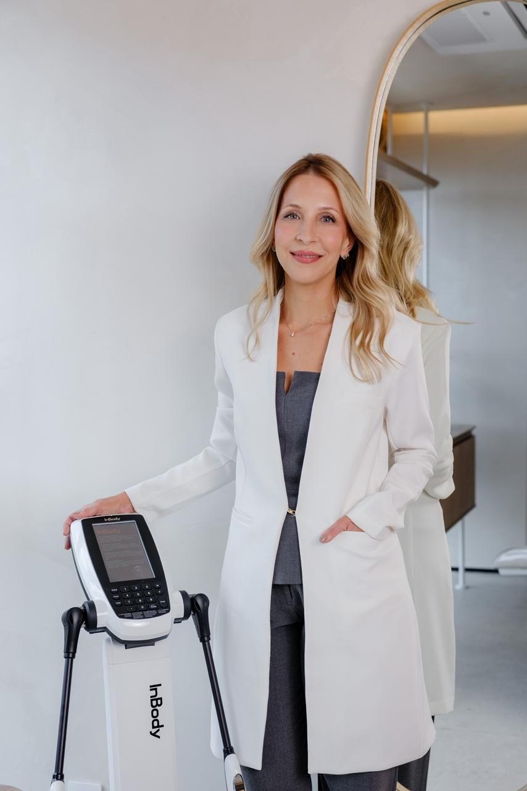
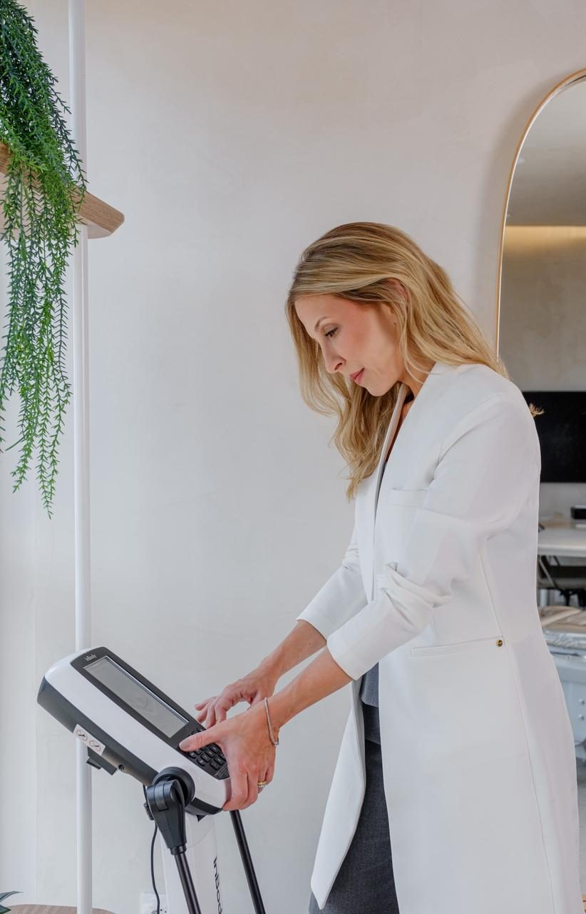

Nutrologia com avaliação de composição corporal
Na consulta com a Dra. Rafaela, o cuidado começa por dados: exames, bioimpedância e uma conversa detalhada sobre a sua rotina.
Agendar avaliação pelo WhatsApp
Itens avaliados na bioimpedância
Bioimpedância InBody
O peso sozinho não mostra se você perdeu gordura ou músculo. A bioimpedância separa esses componentes e serve de referência para os próximos retornos.
Base para força, metabolismo e envelhecimento saudável.
Quanto do seu peso é gordura e como ela muda ao longo do tratamento.
A gordura entre os órgãos, ligada ao risco metabólico.
Distribuição de líquidos dentro e fora das células.

Áreas de atuação
Como funciona
Você chama a clínica no WhatsApp e escolhe o melhor horário.
Conversa detalhada sobre histórico, rotina e objetivos.
Bioimpedância e exames para ter um ponto de partida claro.
Nova medição e ajuste do plano conforme a sua evolução.
A equipe da clínica responde pelo WhatsApp com horários e informações da consulta.